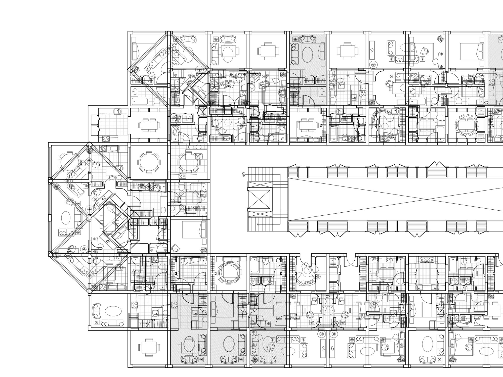
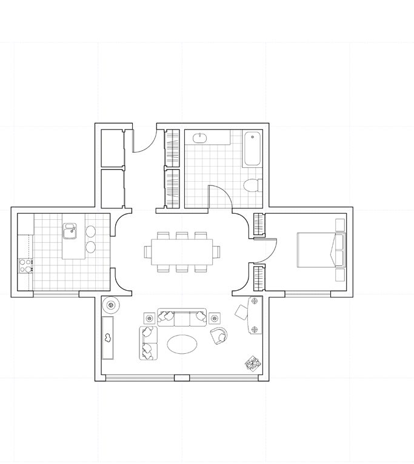
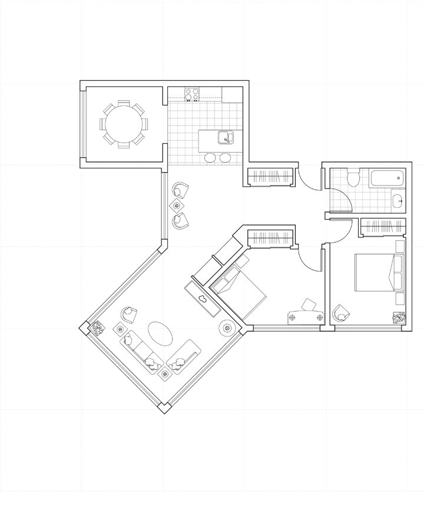
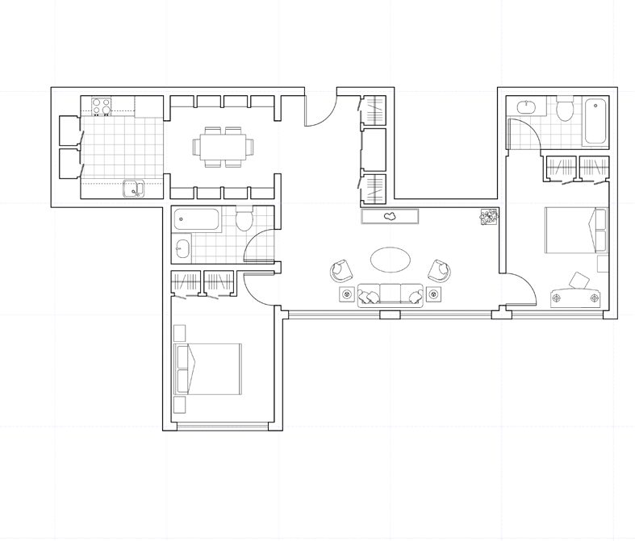
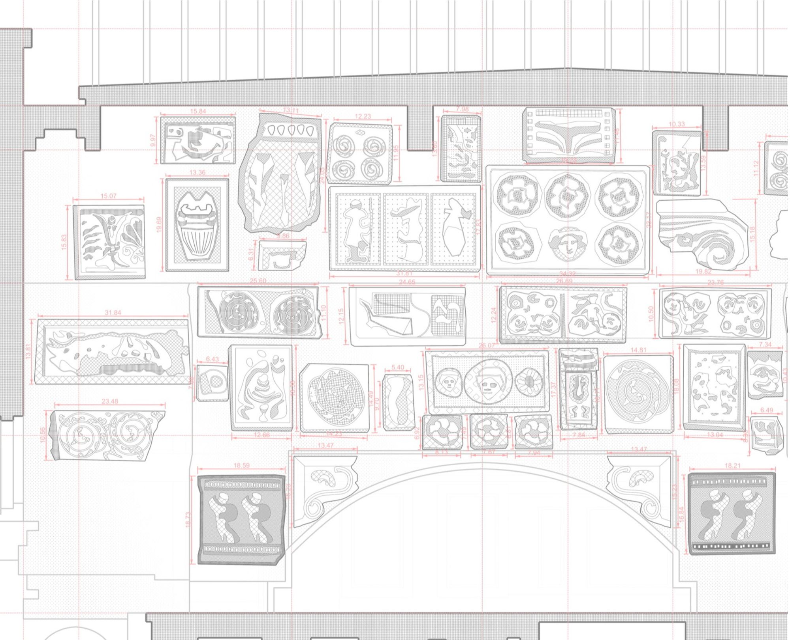
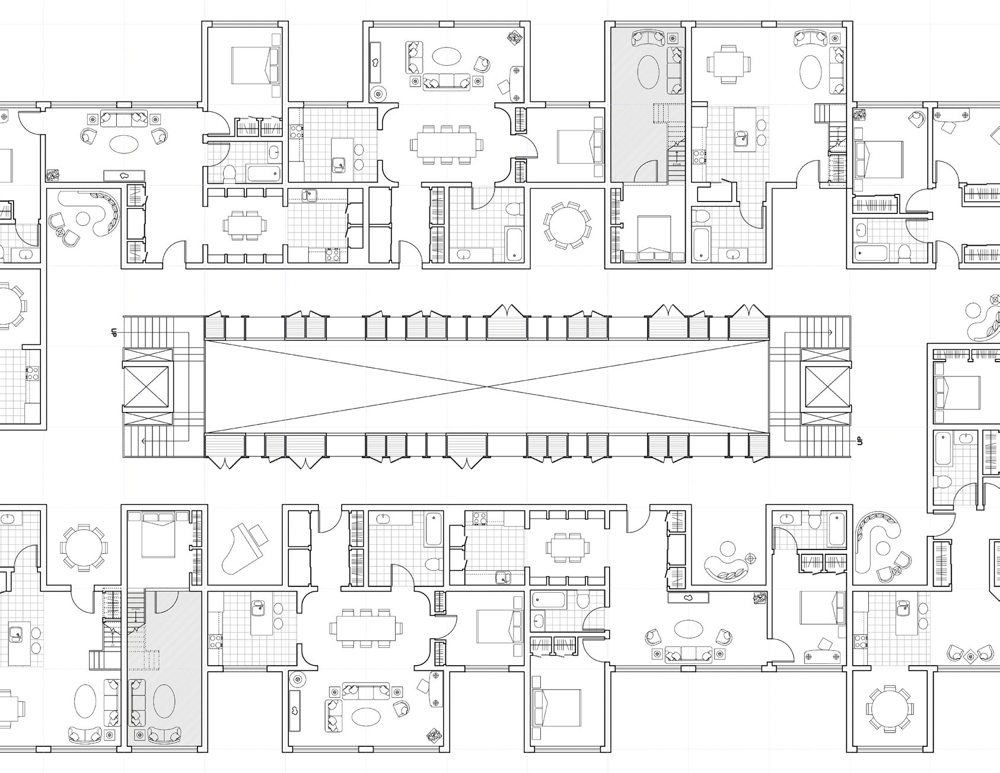
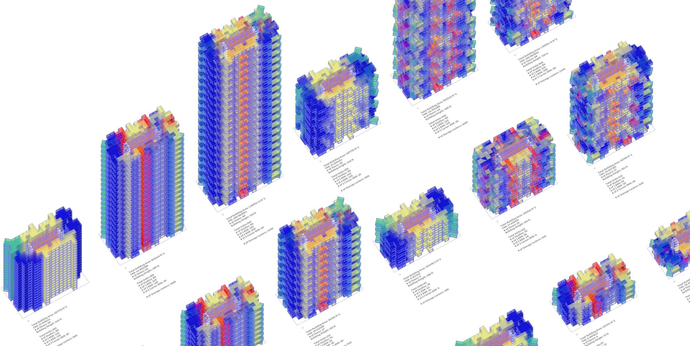

WHERE OBJECTS REST
- Semester
- Core III "Every Thing, A Home", Fall 2024
- Site
- 454-458 W 128th St, New York, NY
- Instructor
- Jelisa Blumberg
Housing designed equally for people and for their objects.
Housing is typically designed for people. This project proposes one designed equally for their objects. A central storage core organizes circulation while serving as a shared archive for residential belonging, inspired by the Metabolist movement, where the core remains constant while the surroundings evolve.
Sir John Soane's drawing office, where objects are not hidden but displayed, studied and lived among, is the project's reference. Units are designed around what residents keep: storage becomes a spatial and social layer rather than a closet.

Units




Levels

Scripted density
A Grasshopper script automates the placement of modular housing units across a site based on adjustable building heights and density goals. Each iteration evaluates FAR, unit count and storage capacity, supporting rapid exploration of housing and development scenarios.
